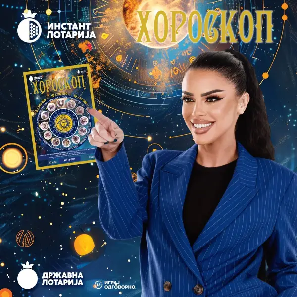
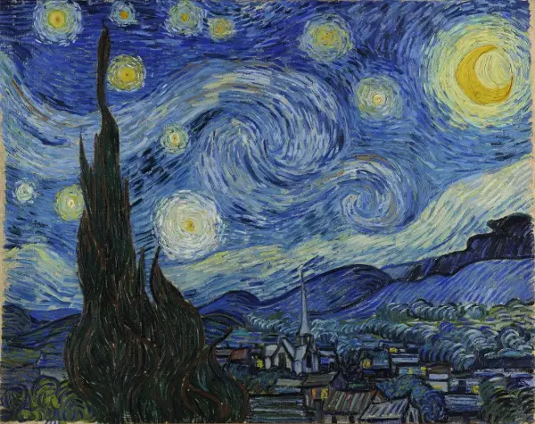
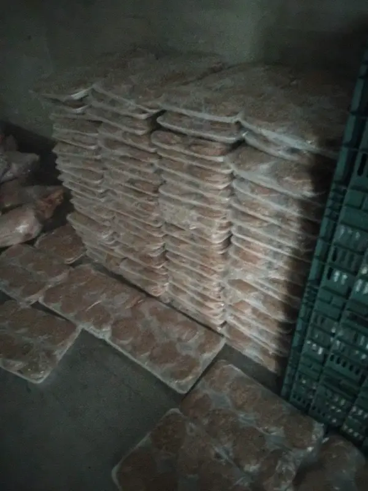
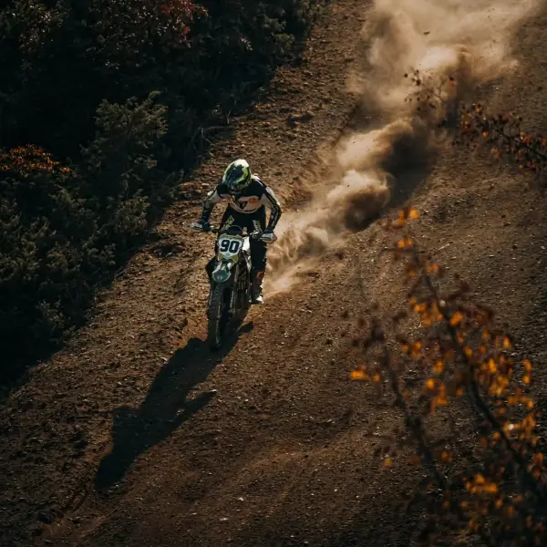

Останато
Oвој компактен седан чини 7.500 евра!
Погодувате… станува збор за автомобил произведен од Кинескиот производител Geely.
Да се искористат деновите без врнежи за финализирање на сеидбата и за превентивна есенска заштита, апелираат агрометеоролозите
Успешното презимување на културите директно ќе зависи од паметното менаџирање со преостанатата топлина и влага во почвата, велат агрометеоролозите од УХМР. Успешното презимување...

Државна Лотарија ја претстави четвртата серија на популарниот инстант лоз „Хороскоп“ – грепка што веќе освои илјадници љубители на среќата и забавата.
Со секое гребење на овој лоз, учесниците добиваат можност да станат дел од возбудливата приказна на добивките и да ја почувствуваат магијата на симболите и броевите.
Ајзенкот му се спротивставува на Нетанјаху со ветување за истрага за нападот од 7 октомври
Поранешниот началник на Генералштабот на израелската армија, Гади Ајзенкот, влегува во изборната трка против премиерот Бенјамин Нетанјаху со ветување за формирање независна држа...
Општина Кисела Вода ја зајакнува соработката со унгарската општина Игал
Општина Кисела Вода оствари средба со делегација од унгарската општина Игал, предводена од градоначалникот Имре Санто, на која се разговараше за можностите за продлабочување на ...
ЕВРОПА Ѝ ЧЕСТИТА НА СРБИЈА Вратите на ЕУ се отворени, земјата отвори ново поглавје
Лидерите на Европската Унија ѝ честитаа на Студентската листа за победата на предвремените парламентарни избори во Србија и најавија поддршка за реформите и за напредокот на зем...

Како настанала сликата „Ѕвездена ноќ“ на Ван Гог?
Иако конфигурацијата на ѕвездите на 22 јули 1889 година најмногу одговара на централниот распоред на ѕвездите во „Ѕвездена ноќ“, научниците претпоставуваат дека ова уметничко де...
Прекини во снабдувањето со струја утре во Тетовско
Од 09:00 до 14:00 часот , прекин во снабдувањето е најавен за дел од селото Долно Палчиште.

АХВ: Уништени 470 килограми ќебапи, плескавици и внатрешни органи пронајдени во нерегистрирана комора во Општина Василево
Во овој период уништени се 69. килограми небезбедна храна од домашниот промет и од увоз, забранет е увоз на 21. килограми небезбедна храна од неживотинско потекло, а во земјите ...

БИТОЛЧАНЕЦОТ ХРИСТИЈАН ИЛИОСКИ ПО 15. ПАТ ДРЖАВЕН ШАМПИОН НА МАКЕДОНИЈА
Битолскиот мотоциклист Христијан Илиоски ја освои својата 15. титула државен шампион на Македонија, потврдувајќи го својот континуитет на успешни настапи во македонскиот мотоцик...